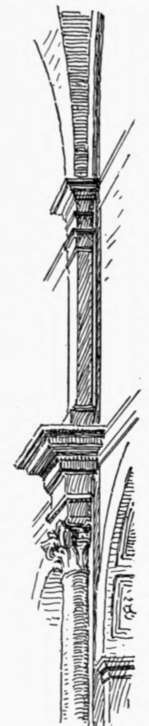
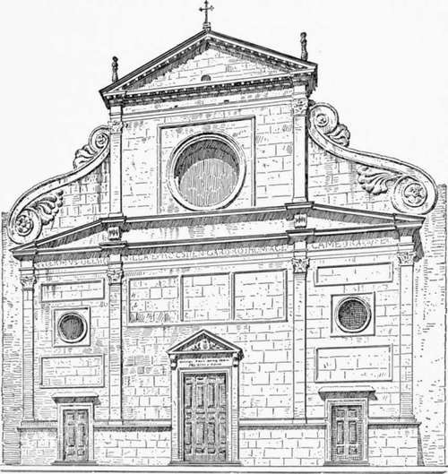
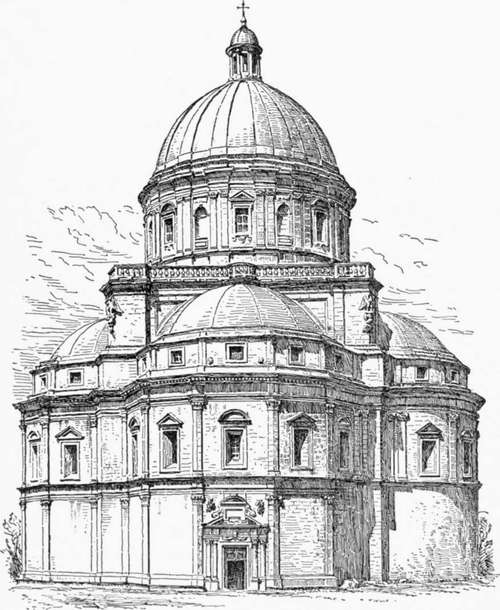
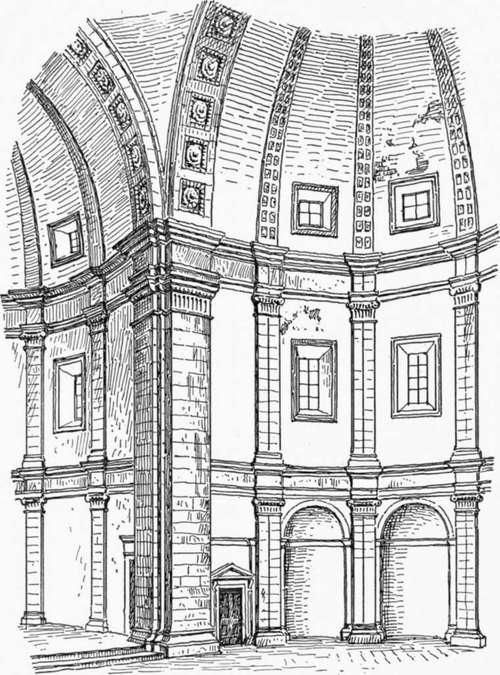
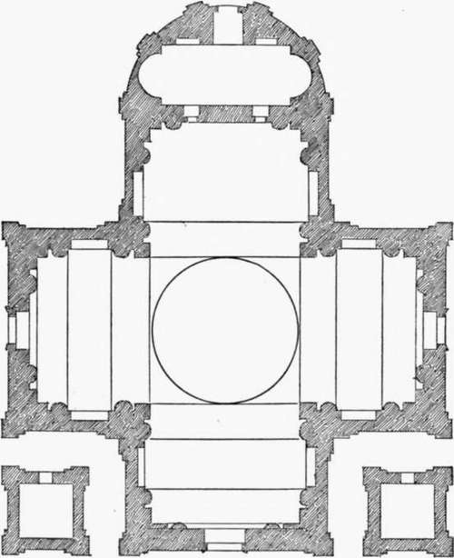
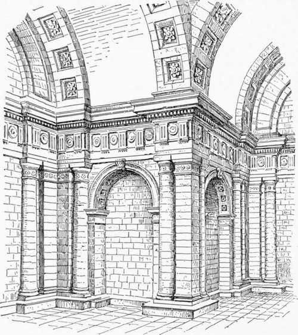

Church Architecture Of The Roman Renaissance. Part 3
Description
This section is from the book "Character Of Renaissance Architecture", by Charles Herbert Moore. Also available from Amazon: Character of Renaissance Architecture.
Church Architecture Of The Roman Renaissance. Part 3
The church of Sant' Agostino is spoken of as a building of the early Roman Renaissance, and is said to have been built by the architect Giacomo da Pietra Santa between 1471 and 1484. But it is incredible that such a church could have been designed by any architect of the Renaissance, or by an Italian architect of any time. Letarouilly says of it that from the thirteenth century the Augus-tinians had a convent and small church in Rome, and that two centuries later they resolved to enlarge the church, and employed as architects Giacomo da Pietra Santa and a Florentine named Sebastiano.1 The character of the building is such, however, as to warrant the belief that it is a mediaeval structure with slight interior ornamental additions of the Renaissance, which may be by Pietra Santa, and a facade, dating from before the close of the fifteenth century, by Baccio Pintelli. In general character the church is in the style of the Rhenish Romanesque architecture of the twelfth century. It has a nave with groined vaulting in square compartments, each embracing two vault compartments of the aisles. It has also the Rhenish alternate system with plain square piers, and archivolts of square section, originally without mouldings, and the main piers have each a broad pilaster-strip carried up to the springing of the vaults. The triforium space has no openings, and the clerestory has plain round-arched windows. It is thus a thoroughly northern Romanesque scheme, entirely logical in its simple construction and fine in its proportions. The Renaissance interpolations consist of a few ornamental details only. A stilted composite column is set against the pilaster-strip of each main pier (Fig. 33), this column is crowned with an entablature-block reaching to the level of the triforium, and upon it is set a short pilaster surmounted with a smaller entablature-block at the vaulting impost. This superfluous and irrational compound, breaking the reasonable and effective continuity of the mediaeval pilaster-strip, greatly disfigures the originally noble design. The only other neo-classic details of the interior are mouldings at the arch imposts and on the archivolts, and coffering on the soffits of the arches. These are quiet and less injurious in effect, though equally superfluous and inappropriate. Thus did the sophistication of the Renaissance designers often blind them to real architectural excellence, and lead them to fancy that they could improve such an admirable and consistent interior by incongruous and meaningless features.
1 Letarouilly, Edifices de Rome Moderne, Paris, i860, p. 350.
Fig. 33.
Fig. 34. — Facade of Sant' Agostino.
The faqade (Fig. 34) is wholly of the Renaissance, and has no mediaeval character except in its general outline, which conforms with that of the building itself. It is a simple design, and foreshadows those of Vignola and Della Porta for the church of the Gesu, to which it is superior in merit, being more reasonable and quiet. Shallow pilasters of considerable elegance mark the divisions of the interior, the portals are framed with simple classic mouldings without orders, and the aisle compartments are surmounted with reversed consoles after the manner of those introduced by Alberti in the facade of Santa Maria Novella in Florence. These consoles are, however, so different in character from the rest of the facade, having their details in higher relief and being set a little in retreat, that they would appear to be later interpolations. Answering to nothing in the building, they are superfluous ornaments, and do not improve the composition, which without them is as reasonable as a composition made up of superficial classic details can well be. A peculiar feature of this front is the truncated pediment that crowns the lower division, and forms the basis of the clerestory compartment. The small rectangular tablets that break the wall surfaces are also noticeable as foreshadowing a treatment that was subsequently much affected by Vignola. Contemporaneously with the facade, and by the same architect, a dome on a drum resting on pendentives was built over the crossing. The present dome rising directly from the pendentives is an alteration of a later time.
In the earlier churches that were wholly built under the Roman Renaissance influence, the Byzantine scheme largely prevails in the plan and structural forms, probably because it lent itself to the most effective display of a high central dome. Among the first of these buildings is the church of Santa Maria della Consolazione outside the wall at Todi. The design is attributed to Bramante,1 and it seems to bear enough resemblance to what we know of his work to justify the attribution. The arms of the cross here take the form of apses, the eastern one being semicircular on plan, and the others polygonal. The dome (Fig. 35) is raised on a high drum, and is almost an exact reproduction of that of San Pietro in Montorio. Its thrusts are thus entirely unbuttressed, but it is probably bound with chains, as was the custom at this time in domes constructed in this manner.2 The half-domes of the apses are better adjusted. They spring from within the supporting walls, which are carried the crossing reaching from the pavement to the springing of the pendentive arches, and from ressauts of the upper entablature converging ribs rise against the surfaces of the vaults. Several further awkward results are here noticeable as a consequence of this application of the inappropriate classic details to the up high enough to give effective abutment, and are loaded at the haunch by stepped rings of masonry, as in the Pantheon. The details of the interior (Fig. 36 ) consist of two superimposed orders of small pilasters, with great pilasters on the angles of Byzantine structural scheme. The entablature which is carried around the whole interior at the springing of the vaults, has to do duty at once for the small order of the upper stage and for the great angle pilasters, and thus in so far as it is in good proportion for the one it cannot be so for the other. Then the true magnitudes of the piers and the pendentive arches are falsified by the pilasters and simulated archivolts which spring from them. These piers and arches really embrace in width both the pilasters and archivolts and the spaces of wall and vaulting between them and the pilasters of the smaller orders and ribs which spring from them. The proper and impressive massiveness of the essentially Byzantine system employed is thus contradicted by an apparent skeleton of classic orders simulating an organic structural scheme which has no real existence.
Fig. 35. — Exterior of Santa Maria della Consolazione, Todi.
Fig. 36. — Interior of Todi.
1 Milizia, op. cit., vol. i, p. 144, affirms that it is by Bramante.
2 Cf. Fontana, op. cit., vol. 2, p. 363.
Fig. 37. — Flan of San Biagio.
The exterior of this monument (Fig. 35) has much merit in its general form and proportions. The great central square mass, visible from the ground upward, gives the sense of support for the dome which the eye demands, and the apses with their half-domes are effectively grouped in subordination to the crowning feature. But this merit, which Todi shares with many other buildings of the Renaissance, is primarily due to the Byzantine scheme adopted, and cannot, therefore, be wholly credited to the Renaissance architect.
A variation of this scheme occurs in the church of San Biagio at Montepulciano by Antonio San Gallo the elder, and begun in the year 1518. Here the arms of the cross (Fig. 37) are square, with an apse added to the eastern arm. The interior is ornamented with a single, and very heavy, Doric order (Fig. 38), framing arched recesses in the imperial Roman manner.
Fig. 38. — Interior of San Biagio.
Continue to:
- prev: Church Architecture Of The Roman Renaissance. Part 2
- Table of Contents
- next: Church Architecture Of The Roman Renaissance. Part 4